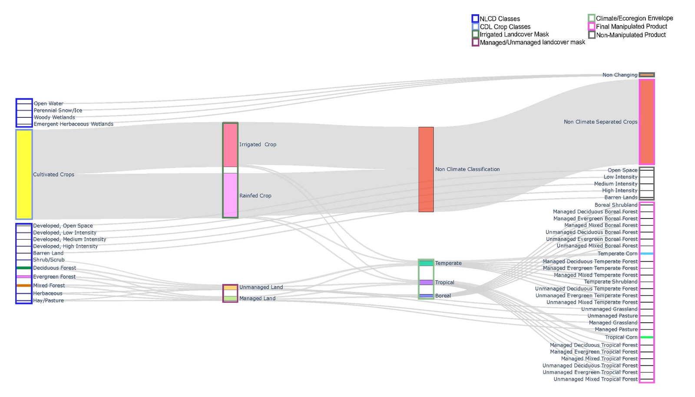

Construir una clasificación común
Combiné información de National Land Cover Database y USDA Cropland Data Layer en una clasificación jerárquica que conserva las distinciones necesarias para los sistemas de modelado de destino.
Desarrollé mapas base de uso del suelo a 30 metros que representan un mismo territorio de Estados Unidos en varios sistemas de modelado. Esta publicación en Scientific Data, de la que soy primer autor, combina procesamiento geoespacial, diseño de clasificaciones y comparación cuantitativa para integrar datos ambientales heterogéneos en GCAM, CLM y LUH2.

El problema
Los modelos de los sistemas humanos y del sistema Tierra describen un mismo territorio con distintas clases, resoluciones espaciales y estructuras de datos. Un estudio regional puede heredar esas inconsistencias antes de iniciar su propio análisis. El proyecto necesitaba una base empírica con detalle espacial que pudiera adaptarse a distintos marcos de modelado.
Mi aporte
Desarrollé la serie de mapas base armonizados, combiné datos de cobertura del suelo y otras capas espaciales, implementé scripts de procesamiento en Python y ajustes en ArcGIS, y contribuí a las comparaciones espaciales documentadas en el artículo. Soy el primer autor de la publicación resultante en Scientific Data de 2025, junto con Ryan A. McManamay.
Enfoque
Combiné información de National Land Cover Database y USDA Cropland Data Layer en una clasificación jerárquica que conserva las distinciones necesarias para los sistemas de modelado de destino.
Refiné las clases de cultivos con CDL, separé la agricultura de riego y de secano, y distinguí bosques y pastizales manejados y no manejados. Las zonas climáticas, las ecorregiones y la elevación permitieron afinar las clases de vegetación.
Utilicé Python para las máscaras de cultivos y la clasificación del riego, con ajustes adicionales de manejo del suelo y clima en ArcGIS Pro. Generé productos a 30 metros para 2008, 2011, 2013, 2016 y 2019 en los Estados Unidos contiguos.
Relacioné las clases detalladas de MSD con las categorías de GCAM, CLM y LUH2. La conversión consideró tanto las diferencias temáticas como la distinción entre píxeles de clase única y coberturas fraccionales en celdas de menor resolución.
Calculé las áreas de cada clase dentro de las cuadrículas de los modelos y comparé las fracciones representadas mediante el error cuadrático medio. Esto mostró dónde las bases existentes de los modelos coincidían con los mapas empíricos y dónde diferían.
Resultado y alcance
El conjunto de datos publicado ofrece cinco mapas base contemporáneos a 30 metros y representaciones intercambiables para varios marcos de modelado. El código y las figuras documentan cómo se construyeron las clases y cómo se evaluaron las diferencias entre las bases de referencia de los modelos. Esta base espacial puede reutilizarse en análisis regionales y comparaciones entre modelos.
Aprendizaje y evolución
Este trabajo muestra cómo el procesamiento espacial conduce al diseño de sistemas de datos: interpretar el significado de distintos esquemas, reconocer cuándo una equivalencia directa resulta insuficiente y evaluar las transformaciones resultantes. Los mismos métodos permiten integrar datos operativos incompatibles o preparar variables geoespaciales para modelos posteriores.
Evidencia y detalles técnicos
Despliega una sección para consultar métodos, figuras o resultados detallados. Selecciona una figura para verla a tamaño completo. Las figuras y capturas originales se acompañan de explicaciones en español.
La investigación abarca los Estados Unidos contiguos a una resolución de 30 metros para 2008, 2011, 2013, 2016 y 2019. Los números de clases que se presentan a continuación describen las representaciones entregadas; no son métricas de exactitud.
| Representación | Clases | Propósito |
|---|---|---|
| MSD | 259 | Sistema armonizado y detallado de uso y cobertura del suelo |
| GCAM | 39 | Categorías de suelo compatibles con GCAM |
| CLM | 68 | Representación compatible con CLM en este producto |
| LUH2 | 12 | Estados de uso del suelo compatibles con LUH2 |
Las figuras originales muestran el proceso desde los datos de origen hasta las clases, así como los mapas base detallados y las versiones específicas para cada modelo.



El error cuadrático medio compara fracciones equivalentes: MSE = (1 / n) × Σ(fracción de referencia − fracción del modelo)². Los valores menores indican mayor concordancia entre los productos comparados, sin demostrar que todas las clases de suelo sean correctas.

Proyectos relacionados
Colaborador de investigación geoespacial y estadística
Combiné observaciones de pérdida de bosque en Colombia con variables de relieve, acceso, uso del suelo y protección para comparar explicaciones estadísticas de la deforestación. El trabajo conecta la preparación de variables en SIG con modelos interpretables y mantiene la distinción entre los resultados históricos de regresión logística y un mapa de riesgo de Random Forest documentado por separado.
Colaborador de investigación y coautor de la publicación
Automaticé la delimitación de cuencas, modelé la condición de referencia de los ríos e investigué relaciones de alteración hidrológica en ecorregiones de Texas. El trabajo combina integración de API en R con modelado en Python y contribuyó a un artículo en coautoría en River Research and Applications, distinguiendo las curvas exploratorias de ajuste de las conclusiones ecológicas validadas.
Investigador y desarrollador independiente
Desarrollo un flujo reproducible con Sentinel-2 para estudiar el crecimiento urbano en los valles orientales de Quito. El trabajo actual abarca adquisición de imágenes, composición temporal y generación de mosaicos espaciales; un piloto en Tumbaco sirve de base para las siguientes etapas de segmentación de áreas construidas, análisis de cambios y validación independiente.
Conversemos
Me interesan los proyectos que conectan el análisis riguroso con aplicaciones útiles.